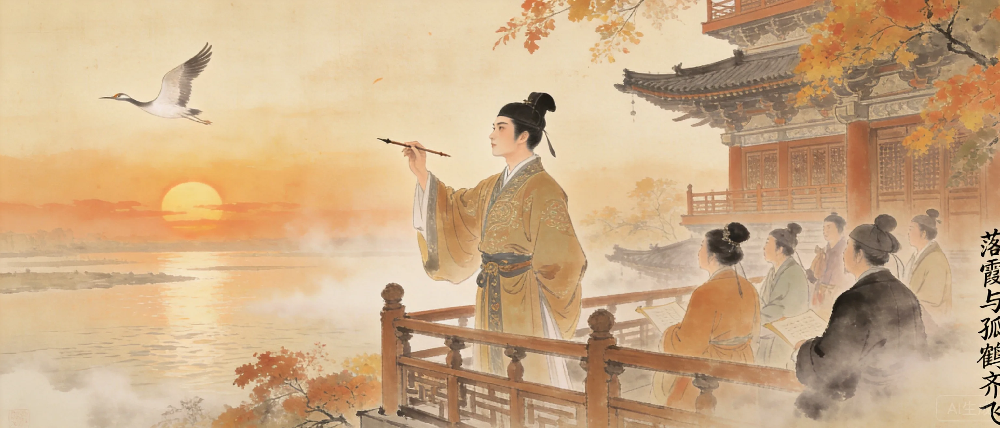
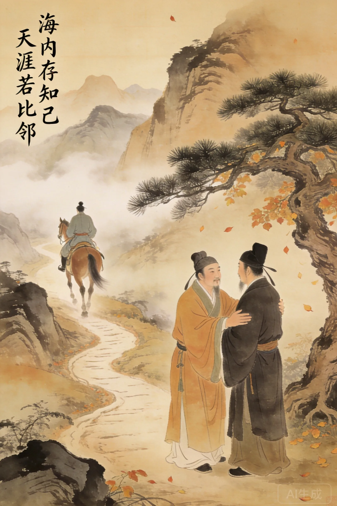
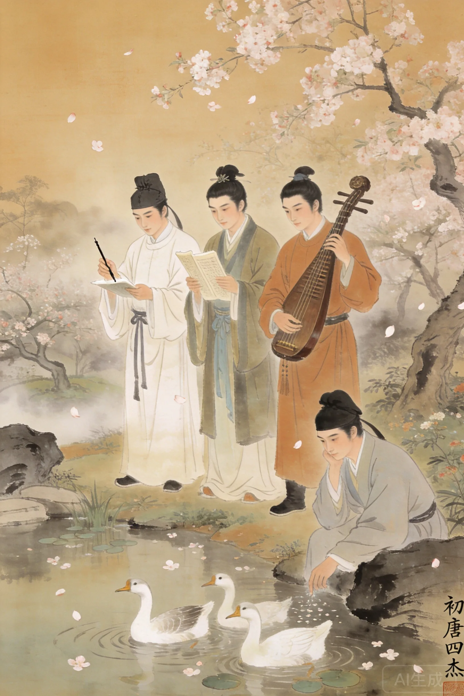
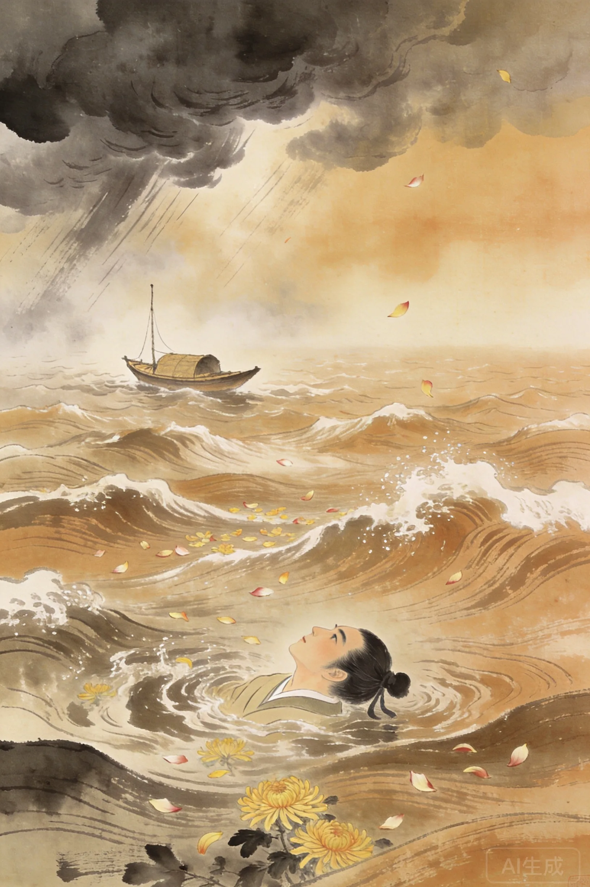

字子安。祖父王通为隋末大儒。六岁能文，神童。
十六岁及第，授朝散郎，最年轻朝廷命官。
戏作《檄英王鸡》触怒高宗，逐出沛王府。
因擅杀官奴获死罪。遇赦但仕途尽毁。
途南昌即席挥毫《滕王阁序》。
渡海溺水惊悸而卒，年仅二十七岁。


上元二年（675年），洪州都督阎伯屿重修滕王阁，大宴宾客。本意让女婿孟学士作序以显其才，假意遍请宾客。众人推辞，唯王勃不却，提笔便写。阎怒而退，却命人逐句来报。
报到「豫章故郡，洪都新府」——阎摇头：「老生常谈」 报到「星分翼轸，地接衡庐」——阎不语。 报到「落霞与孤鹜齐飞，秋水共长天一色」——阎矍然而起：「此真天才，当垂不朽矣！」
全文773字，骈四俪六而气韵流转，写景、怀古、抒情、言志一气呵成。「关山难越，谁悲失路之人？萍水相逢，尽是他乡之客」——一个二十六岁的天才，在人群中最热闹的时刻，写下了最深的孤独。
**从《送杜少府之任蜀州》开始读。** 这是王勃十七岁写下的送别诗，但里面没有一丝少年气——全是成年人的通透：「海内存知己，天涯若比邻」。然后再读《滕王阁序》，你会发现这个十七岁的少年九年后写下了千古第一骈文，然后死了。他的全部作品是一个人在知道自己不会活很久时加速燃烧的证据。
阎伯屿本意让女婿作序以显其才，假意遍请宾客。唯王勃不却，提笔便写。阎怒而退，命人逐句来报。至「落霞与孤鹜齐飞」时，阎矍然而起：此真天才！'
王勃的一生像一个被加速的剧本：六岁能文、十六岁进士、二十六岁写《滕王阁序》、次年溺水而亡。他用二十七年把别人七十年的才华都烧完了。
骈文在六朝末已走向僵化——四六对仗、堆砌典故、死气沉沉。王勃用《滕王阁序》做了一件事：把叙事速度重新注入骈文。「落霞与孤鹜齐飞，秋水共长天一色」——十个字，四个意象，一次呼吸的时间读完，却让人看见了整个宇宙的运动。他不是在写骈文，他是在让骈文重新学会奔跑。
一个火把。不是蜡烛——火把。王勃的一生是用加速来对抗时间的：六岁能文，十六岁进士，二十六岁写出《滕王阁序》，次年溺死。他没有「晚年」这个概念。他的全部作品都在说同一件事——我知道时间不多了，所以我每一笔都是全力以赴。二十七岁，但你读他的东西会觉得这个人至少活了七十岁。

四杰之一。曾评：愧在卢前，耻居王后——以在王勃之后为耻。但王勃死后，杨炯为其文集作序，高度赞扬。
四杰之一。七岁作《咏鹅》。曾为徐敬业起草讨武檄文，武则天读后都感叹：有如此才，而使之沦落不偶，宰相之过也。'
四杰之一。以《长安古意》名世。晚年因病投颍水自尽。四杰无一善终。
王勃写《滕王阁序》那年，伊斯兰教刚刚传播到北非。地中海世界正在经历一次文明重组。同一年，盎格鲁-撒克逊史诗《贝奥武夫》正在被口头传唱。东西方文学都在寻找自己的「第一个声音」。
《滕王阁序》是中国骈文的最高成就——杜甫、韩愈、柳宗元都深受其影响。韩愈在《新修滕王阁记》中表达了对王勃的仰慕。今南昌滕王阁每年吸引数百万游客，都是因为一千三百年前那一夜的即席挥毫。一个二十六岁的人死后，他的文字在每一个秋天重新活过来。
